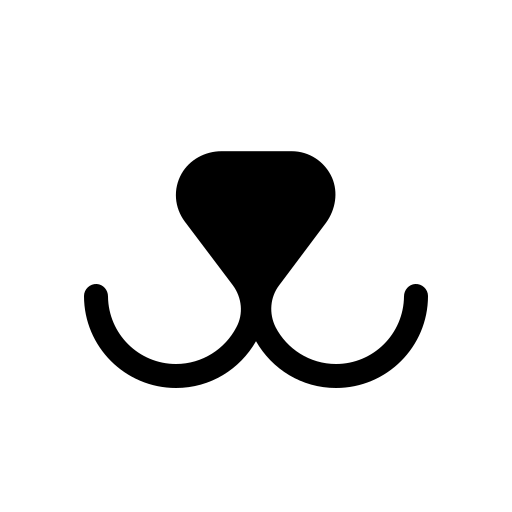

Melhores alunos do #Vem Ser DBC
Melhores alunos do #Vem Ser DBCConheça a ONG Focinhos de Luz!
 Site
A Associação Focinhos de Luz é uma organização sem fins lucrativos que luta pela reintrodução de animais abandonados à sociedade, criada em 2010. Construída por apaixonados pela causa animal e inconformados com o abandono recorrente, a nossa casa de passagem abriga em torno de 100 animais, que passam por cuidados até estarem aptos a adoção, onde podem finalmente encontrar um lar definitivo e amoroso.